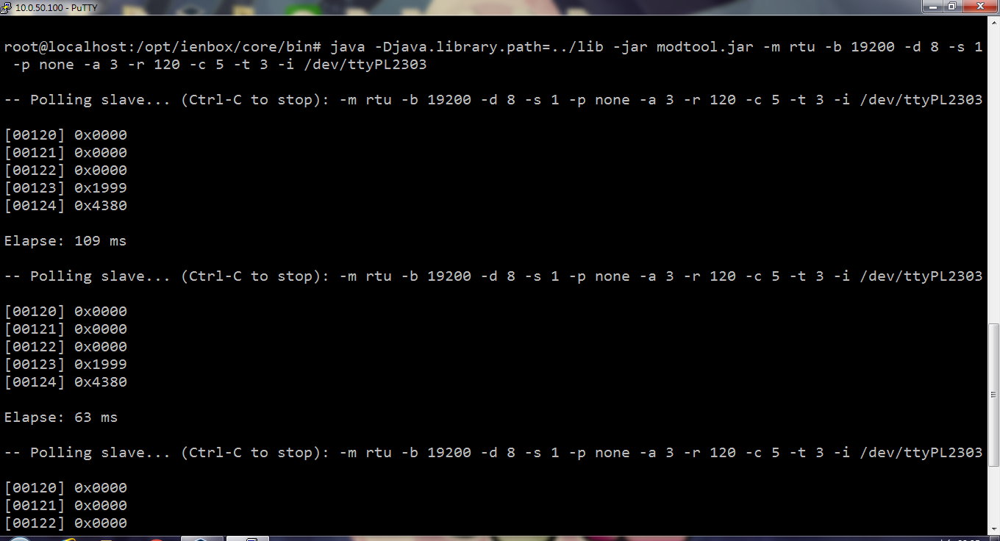
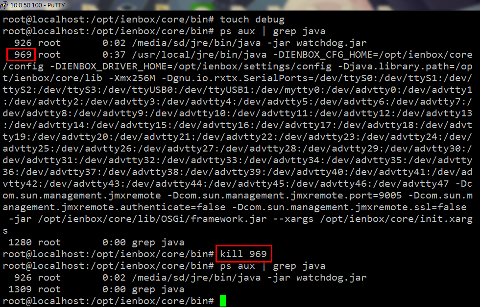
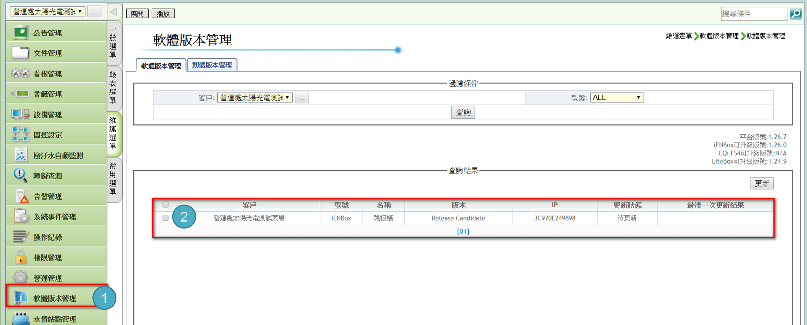
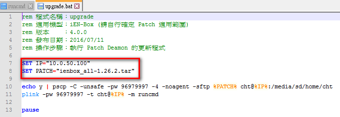
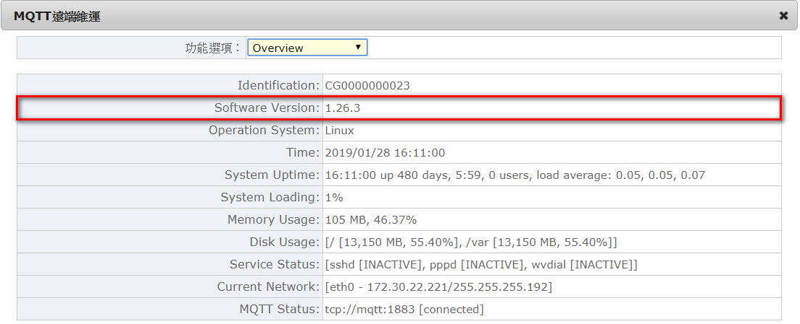
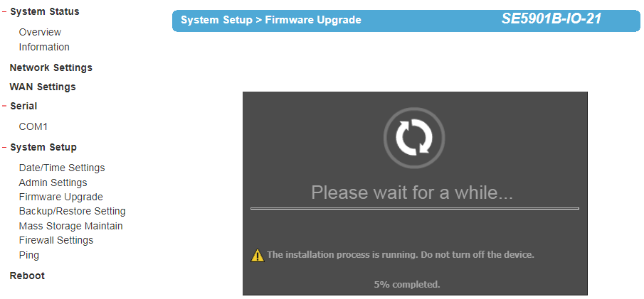
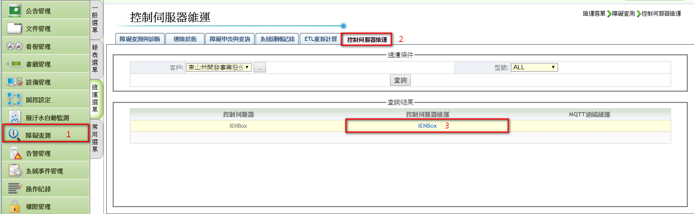
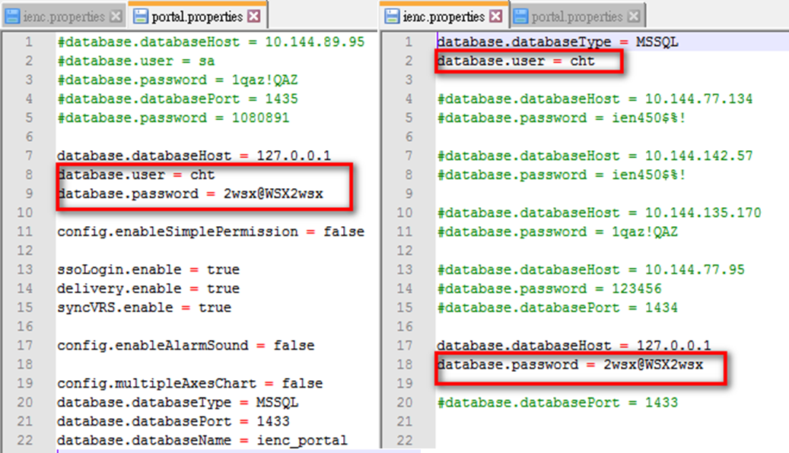

Introduction
此整理於相關iEN維運經驗作為交接，同時將相關資料放至於Google Docs上，iEN維運
ModInverter: Download，credited by Jasper.
Modscan
Modscan 是一套用來測試設備通訊是否正常的程式，即檢驗通訊一來一往的封包是否正常、無遺失
若有不穩定的情況，可以將 response timeout 時間拉長，提高通訊穩定性 (建議 timeout 最大設五秒)
以下說明標準 Modbus Protocol 跟太陽能逆變器相關 Protocol 的 modscan 使用方式
Modbus Protocol
此方式僅用在標準 Modbus protocol 設備上
If you have any interests in Modbus protocol, take a look Modbus Protocol.
cd /opt/ienbox/core/bin
java -Djava.library.path=../lib -jar modtool.jar -m rtu -b 9600 -d 8 -s 1 -p none -a 1 -r 100 -c 1 -t 4 -i /dev/ttyS1
| Parameter | Description |
|---|---|
| -m rtu/tcp | Modbus transport protocol |
| -a # | Slave address |
| -r # | Start reference |
| -c # | Number of values o read |
| -t # | 0: coil, 1: discrete input, 3:input register, 4:holding register |
| -b # | Baudrate (e.g. 9600, 19200) |
| -d # | Databits |
| -s # | Stopbits |
| -p # | Parity |
| -i target | SERIALPORT/HOST |
| -P # | TCP/UDP port number |
| -l # | Poll rate in ms, (1000 is default) |
| --timeout # | Response timeout in ms, (1000 is default) |
執行結果如下圖：

Solar Inverter Protocol
此方式使用於太陽能逆變器，支援以下廠牌太陽能逆變器，支援以下廠牌: 茂迪、固德威、Kaco、Kstar
透過 FTP/WinSCP 方式將檔案放至 iENBox 中，預設位置為 /media/sd/home/cht
cp /media/sd/home/cht/modInverter.jar /opt/ienbox/core/bin
參考: modInverter使用說明
java -Djava.library.path=../lib -jar modInverter.jar -m kaco -a 1 -i /dev/ttyS1
| Parameter | Description |
|---|---|
| -m motech/goodwe/kaco/kstar | CHT supported Inverter Protocol |
| -a # | Slave address |
| -r # | Slave reference |
| -c # | Number of values o read |
| -t # | 0: coil, 1: discrete input, 3:input register, 4:holding register |
| -b # | Baudrate (e.g. 9600, 19200) |
| -d # | Databits |
| -s # | Stopbits |
| -f # | The path of ID/SN for Goodwe |
| -p # | TCP/UDP port number (502 is default) |
| -i target | SERIALPORT/HOST |
| --ms # | The start of slave reference is queried in Motech (1 is default) |
| --me # | The end of slave reference is queried in Motech (250 is default) |
| --timeout # | Response timeout in ms, (1000 is default) |
iENBox
說明 iENBox 環境，以及相關障礙排除經驗
大略分為 iENBox同步異常 、 停用iENBox服務 、 iENBox更新的方式
相關資料: iENBox教育訓練 、 障礙排除SOP
iENBox 環境
iENBox 可以簡單分為下列五個：
| 環境 | 描述 | 路徑 |
|---|---|---|
| Bin | 主程式 (含 modtool.jar 等程式) | opt/ienbox/core/bin |
| Log | LOG紀錄 (ienbox.log and driver.log) | opt/ienbox/storage/log |
| Config | 參數設定 (PROPRIETARY.PROPERTIES) | opt/ienbox/core/config |
| Lib | 程式 library | opt/ienbox/core/lib/OSGi |
| Raw Data | 設備資料 | opt/ienbox/storage/upload/buffer |
Bin: 通常在此資料夾，是將 iENBox服務停用 或作 Restore iENBox 的動作，以及 Modscan 測試設備通訊
Log: iENBox運作紀錄 (e.g., MQTT連線、IEN平台連線等異常紀錄)
Config: 在 Maintenance 設定的結果，會儲存在
PROPRIETARY.PROPERTIES檔案若有需要看詳細的 iENBox Log 資訊，可以將
LOG.PROPERTIES作下列修改(擇一方式)：
1. log4j.logger.IENBOX.MSG=INFO, IENBOXFileAppender
2. log4j.logger.IENBOX.NOTIFY=DEBUG, IENBOXFileAppender
Lib: 這邊是相關 library，只有在尚未釋出 iENBox 新版本，Release Candidate 階段先將 lib 作蓋檔，大多蓋在 jars/cht 裡
有做蓋檔動作，得用
chmod a+x，確認 jars 有權限可以執行Raw Data: 確認iENBox是否存留 raw data，通常當報表沒數值來這邊作確認，參考資料: iEN-Box 如何緩存上傳 rawdata files
1. 如果有 Raw Data，先去看 Log，確定非網路問題(e.g., 防火牆等問題)後，建議將 iENBox 服務重啟，確認是否消失
2. 沒有 Raw Data，建議看 iENCentre Log，這邊可以確定 iENBox 有將 Raw Data 上拋回去
WebService Maintenance
設定頁面: http://localhost:4511，localhost預設如下：
ATOP: 10.0.50.100
Advantech: 192.168.0.1
Windows: 127.0.0.1

停用iENBox Service
說明 iENBox 停用的方式，在測試設備通訊時候使用，避免通訊埠打架
Windows iENBox
- 服務 -> iENBox -> 停止

Linux iENBox
debug 檔案可以暫停 iENBox watdog 功能，讓服務殺掉不會再被帶起來
在主程式位置，輸入下列指令，以下圖為例，iENBox 的 PID 為 969，kill 969 即可殺掉 iENBox 服務
touch debug
#check the PID of iENBox and kill it
ps aux | grep java
kill $PID

欲恢復 iENBox 服務，將 debug 檔案移除即可，watchdog 會將 iENBox 服務帶起來
rm debug
ps aux | grep java
確認其 iENBox 服務是否恢復運作

同步異常處理 (Restore iENBox)
以下為 iENBox Restore 清除的方式，基本上同步異常有很多原因
這邊僅能提供單純確認 iENBox 是否有問題，若清除 iENBox 後，還仍不能同步
建議在平台新增新的 iENBox，嘗試看看能不能同步新的 iENBox
以上方式均不行，建議得看 iENCentre 的 LOG 紀錄，並請 TL 協助幫忙
Restore Windows iENBox
從服務將 iENBox 服務停止
iEN/iENBox/core/bin，執行
clean.bat
Restore iENBox by WebService
- Reset and Restore
- Restore Default Settings
Restore iENBox by Shell (Linux)
執行 clean.sh 會將 iENBox 作清除動作 (若有raw data也會一併清除)
cd /opt/ienbox/core/bin
./clean.sh
iENBox 納管其他 iENBox (iENBox Protocol)
在新增控制器 -> 通訊協定選擇「IENBox」
填入欲納管 iENBox 的 IP 及 埠號: 4511
暫存器位置: 監控點ID (註: 不需要帶 $ 符號)

iENBox 升級包及更新
講述 iENBox 升級包如何產生，以及如何將案場的 iENBox 做更新
升級包製作
此升級包需要 iENBox 版號對應才能更新，例如: iENBox_1.24.15-1.26.3
那麼需要 iENBox 1.24.15 packages 與 iENBox 1.26.3 packages
執行 MakeBoxPatch-NoSQL.bat，將對應的 packages 填入
MakeBoxPatch-NoSQL.bat <舊版位置> <新版位置> <升級包名稱>
若要製作 iENBox all-1.26.3，則舊版位置為 null，即建立空的資料夾帶入
參考: iENBox安裝檔與升級包製作

iENBox Update
分成兩種方式，其一可透過 iEN 雲端平台更新，另一種則為一鍵更新
- iEN 雲端更新: 維運選單 -> 軟體版本管理 -> 選擇要更新的 iENBox -> 更新
透過下列網址，確認升級包檔案是否存在平台，將版號作對應修改即可: ienbox_1.24.15-1.26.3.tar
http://ien.net.tw:8080/ienc/update/ienbox_1.24.15-1.26.3.tar

- 一鍵更新: 將升級包放置同個資料夾，修改 upgrade.bat 跟 runcmd.bat
將 IP 以及檔名改成相對應的名稱，如紅框所示，執行 upgrade.bat 進行更新


- 手動更新: 將 升級包 放至 iENBox SD卡 中，其實就等於手動執行 script 的動作，做跟 runcmd 內容一樣的指令
#解壓縮升級包
tar xvf ienbox_all-1.26.3.tar
#執行patch script
sh patch.sh /opt/ienbox
雲端閘道器 iENBox 更新 (Cloud Gateway)
參考: 手動更新 Cloud Gateway 上面的 iENBox 版本
Step 1. 將 iENBox 安裝 iso 檔案裡面的 06-ienbox.tar.gz 複製到 Cloud Gateway 上的 /opt/ienboxes 中，如此未來新增的 iEN-Box 都會採用最新的版本運行
Step 2. tar zxvf /opt/ienboxes/06-ienbox.tar.gz -C /tmp
Step 3. cp -f /tmp/ienbox/core/hsqldb/bin/ienbox.script /opt/ienboxes/CG0000000007/core/hsqldb/bin/
Step 4. cp -f /tmp/ienbox/core/lib/OSGi/jars/cht/*.jar /opt/ienboxes/CG0000000007/core/lib/OSGi/jars/cht/
Step 5. (cd /opt/ienboxes/CG0000000007/core/bin ; ./clean.sh)
Step 6. (cd /opt/ienboxes/CG0000000007/core/bin ; ./run.sh stop)
Step 7. 確認iENBox版本

Firmware Upgrade
進入 ATOP 網路設定頁面: http://10.0.50.100/，System Setup -> Firmware Upgrade
Step 1. 確認 iENBox Firmware version

Step 2. 更新 Firmware

Step 3. 確認 Firmware 檔案是否正確

Step 4. iENBox 更新 Firmware 中

Step 5. 更新完後會重開機，確認 Firmware version

iENCentre
說明 iENCentre 操作設定，以及相關障礙排除
iEN報表無資料 (No Raw Data)
下列方式可以先自行排除，若都不能解決，建議請 TL 協助幫忙，iEN報表無資料問題(Google Doc) 供參考
iENBox Buffer
可以參考前面 iENBox環境 或 iEN-Box 如何緩存上傳 rawdata files 所述，查看 upload/buffer 內是否有 raw data
若沒有，表示 iENBox 有正常上拋回平台，平台DataBase 問題可能性較大
若有 raw data，建議重啟服務，若重啟服務仍不行，請往下逐一確認問題點
若案場是固定IP，可以透過平台的 控制伺服器維運 進入 iENBox Webservice 作重啟 iENBox 動作，如下圖

Firewall Rules
確認 iENBox 對 iEN 平台的 8080 port 是有連通的
telnet 211.72.253.88 8080，確認網路有無連通
wget http://211.72.253.88:8080/ienc/MiddlewareMSH，確認是否能下載
若網路有連通，但不能下載 MiddlewareMSH，表示平台有問題，可以確認平台 Middleware 狀態

DNS Server
嘗試上述方式都不行的話，建議修改 iEN 平台 主要平台訊息接收URL 內容
原因有可能是客戶端防火牆，將 DNS Server 給擋住了
原本: http://ien.com.tw:8080/ienc/MiddlewareMSH
修改: http://211.72.253.88:8080/ienc/MiddlewareMSH
即 ien.com.tw DNS 為 211.72.253.88 意思
上述方式都不能解決，建議抓 iENCentre Log 給 TL 幫忙查測
更換 iENCentre 資料庫使用者帳密
修改下列兩個檔案，將 database.user 、 database.password 替換欲修改的帳密
ienc.properties: \webapps\ienc\WEB-INF\ienc.properties
portal.properties: \webapps\portal\WEB-INF\portal.properties

iENCentre語音告警設定
需將告警事件單的 事件等級事件嚴重程度 設定為重要以上階級，才能收到語音告警
將等級程度設為 緊急 、 警戒 、 重要 以上

Errors
The Kittn API uses the following error codes:
| Error Code | Meaning |
|---|---|
| 400 | Bad Request -- Your request is invalid. |
| 401 | Unauthorized -- Your API key is wrong. |
| 403 | Forbidden -- The kitten requested is hidden for administrators only. |
| 404 | Not Found -- The specified kitten could not be found. |
| 405 | Method Not Allowed -- You tried to access a kitten with an invalid method. |
| 406 | Not Acceptable -- You requested a format that isn't json. |
| 410 | Gone -- The kitten requested has been removed from our servers. |
| 418 | I'm a teapot. |
| 429 | Too Many Requests -- You're requesting too many kittens! Slow down! |
| 500 | Internal Server Error -- We had a problem with our server. Try again later. |
| 503 | Service Unavailable -- We're temporarily offline for maintenance. Please try again later. |